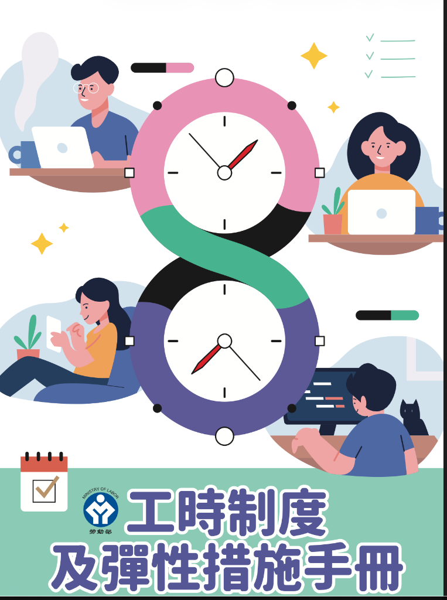
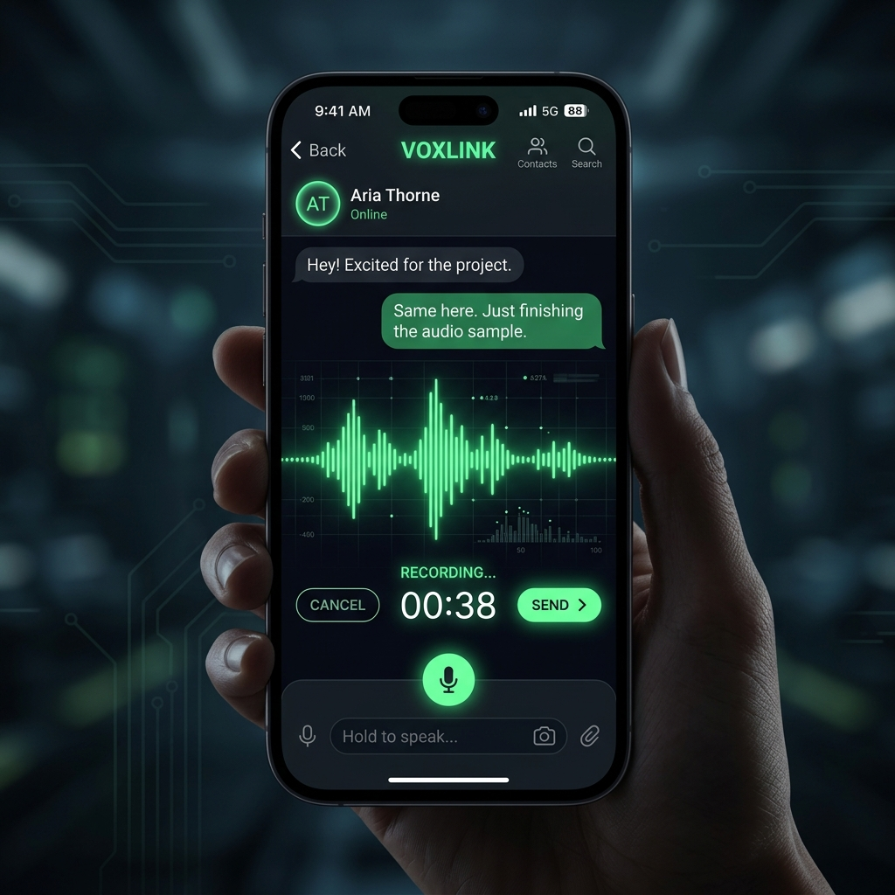
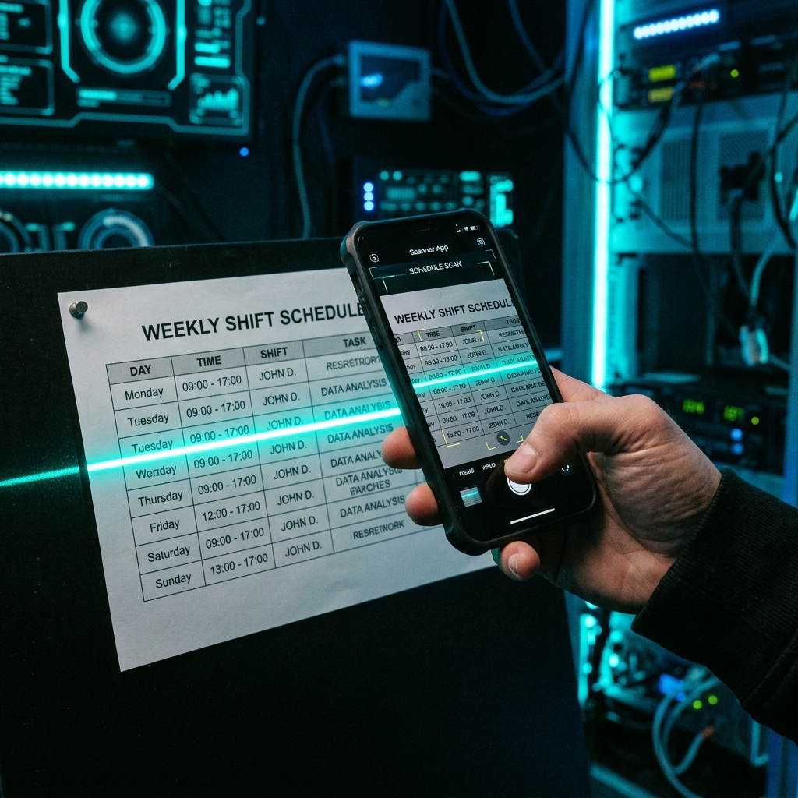

AWS 專題 2026：數位轉型與法規 AI 實踐
完整 AI 服務月費可能高達數萬至十數萬美元，中小微企業根本無法負擔。
手搖飲料店、小吃店、小餐廳員工流動高、排班頻繁，法規遵循壓力極大。
符合法規 × 高性價比 × 人人可用。降低微型企業數位轉型門檻。
本專案嚴格依據勞動部官方發布之最新指導文件，將法規細則轉化為 AI 的核心判斷邏輯。

針對「每日超過 8H、連續工作超過 6 天」等絕對違規行為，系統強行攔阻排班並要求重啟，不允許任何灰色空間。
針對「變形工時天數異常、休息日配置風險」等項目，AI 主動給予管理建議，預防潛在的勞動檢查風險。
Gemini 3.5 Flash 計費結構極輕量，大幅省下基礎硬體開銷。
Cloud Run 採標準容器化架構，本地 Streamlit 腳本上雲不需重構。
從原先依賴的靜態 JSON 匹配，演進為能動態查閱 PDF 全文的真 RAG 系統。
排班邏輯、法規判定與核心代碼抽離。當勞基法修正時，僅需在後端更新 PDF 手冊或 JSON 規則，不需重新重構或發布微服務運算層。
每一次排班的審查結果、BLOCK 行為、WARNING 提示均會自動留存日誌，將傳統勞檢時的手忙腳亂，轉化為隨時可導出的結構化合規報告。
整合多模態音訊流，員工直接開口說話，系統即自動辨識假單意圖並回傳合規結果。
拍攝紙本或手寫紀錄，利用視覺大模型抽取出勤矩陣並自動比對工時手冊規則。
依據歷史出勤數據與排班紅線，自動演算生成零違規風險的推薦班表。


感謝聆聽 | labor-ai-web-agent 2026 專案報告